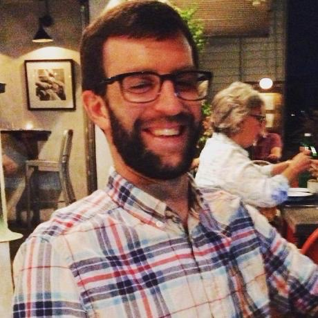
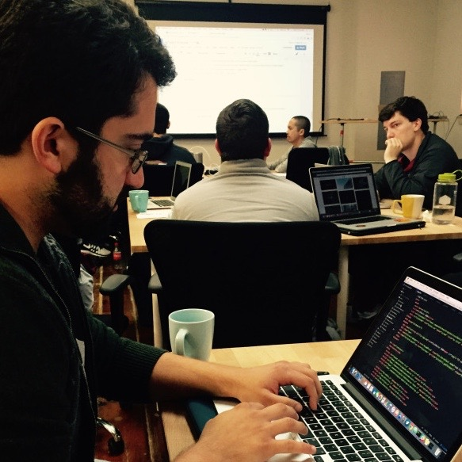

Here's the Story
Our story begins with the idea that programming education could be brought to a higher standard. We wanted to create a coding education app that aimed at middle/high school students. It would provide an intermediate alternative between block based learning sites (i.e. Scratch) and dry code only sites (i.e. Code Academy). Teachers could create classrooms and monitor students’ progress in mini-games.
This dream came into reality in the form of an app called Code Champions.
With Java Developer Jack Neligan, and Front End Engineers Kellee-Morgan Witherspoon and Terry Kennair, Code Champions was created.
While this app was in production, the team got to know each other pretty well. Here are some fun facts about each developer:
-
Jack Neligan: Before he decided to take the plunge into the world of Java, Jack was a chef at the restaurant, Hom, in downtown Charleston and worked in publishing. He is also a very dedicated Panthers fan.
-
 Kellee-Morgan Witherspoon: Before starting class at the Iron Yard, Kellee-Morgan worked in fundraising for political campaigns in Washington, D.C. She has a love for horse-back riding and enjoys all types of music... including rap.
Kellee-Morgan Witherspoon: Before starting class at the Iron Yard, Kellee-Morgan worked in fundraising for political campaigns in Washington, D.C. She has a love for horse-back riding and enjoys all types of music... including rap. -
Terry Kennair: Prior to taking the Front End Engineering course, Terry invented the touch screen... or at least helped find a way to make them differently. He loves the Saints, but never let that get in the way of working with Jack.
We also kept a blog about our experiences creating Code Champions. Please take a look at: codechampions.wordpress.com
If you would like to dive into our code, please visit our GitHub page: https://github.com/codeChampions/codeChampions
We would also like to take a moment to thank everyone who was involved in this crazy but wonderful process.
First, thank you to the Iron Yard for giving us the skills and the opportunity to do something out of our comfort zones. We are all excited to continue our journey into the world of web development and we wouldn't be here without Calvin Webster, Nathan Hall, Zach Oakes, Betsy Hare, and everyone else who makes the Iron Yard what it is.
Second, we would like to thank our significant others for putting up with our nerdiness and late nights of code. We promise it was worth it.
Thirdly, thanks to our classmates Brandon and Jacob for their Phaser help. Also a big thanks to our voice specialists Allie, Alex, and Jacob.
Fourthly, thanks to OpenGameArt for giving us some great images for our games and Piskell for helping us create some of our own works of art.
And lastly, thanks to all of our classmates at the Iron Yard. We made some great friendships, learned valuable lessons, and all started a new chapter in our lives together. The Code Champions team wishes everyone the best of luck in their future endeavors.